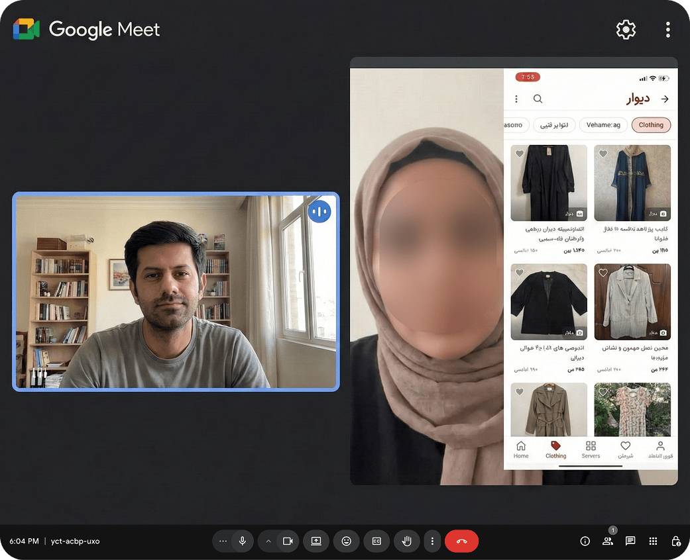
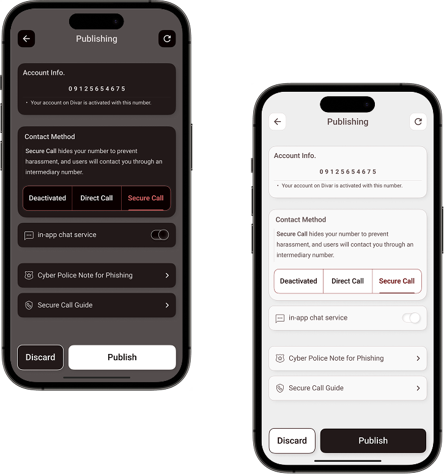
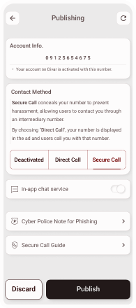
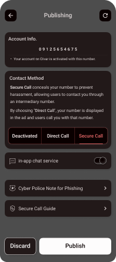

Case Study 01 · Trust & Safety
Solving Harassment at Scale
How I Protected 2.1M Users on Iran's Largest Marketplace
We reduced harassment incidents by 60% inside Divar's clothing category by building a proxy calling experience that now protects 2.1M weekly users.
What is Divar Classified Ads Platform?
Divar is Iran's largest and most popular online classified ads platform (launched in 2012). It serves as a go-to marketplace for everyday transactions, covering categories like real estate, vehicles, jobs, services, and personal items.
Customer care centres were flooded with harassment reports in the Clothing & Apparel category.
- Sellers were deleting listings or churning entirely, fearing repeat incidents.
- Even after victims deleted listings, calls continued because their numbers were already exposed.
- Divar risked losing a category that anchored daily engagement.
"It was infuriating. I took down my Divar ad hoping to stop the calls, but they kept coming. Someone told me my number was in a Telegram group."
Professional artist selling bespoke clothing
I interviewed harassed sellers and analysed behavioural data to understand:
- How did this happen?
- How were users currently trying to solve or prevent it?

The breakthrough came from connecting qualitative stories to quantitative signals.
"One caller even knew my eye colour. They clearly found my WhatsApp through the phone number on Divar."
Fashion retail worker
Assumption:
Users are being harassed through their phone numbers being cross-referenced on social media platforms.
Validation:
I sampled 1,000 fashion sellers and compared WhatsApp profile characteristics between a random sample and known harassment victims. I classified them into three types:
A. Phone number with WhatsApp account + profile image
B. Phone number with WhatsApp account, without profile image
C. Phone number with no WhatsApp account
Key Findings:
- Harassment victims were significantly more likely to have a recognisable profile image on social media.
- We could not recommend sellers hide profile pictures — this reduces trust with legitimate customers.
"I stopped publishing my phone number on my ads. It felt unprofessional, but it was the only way to avoid harassment."
Freelance graphic designer
Assumption:
Sellers are hiding phone numbers and relying on in-app messaging to avoid harassment.
Validation — Cross-Category Comparison:
I compared the % of ads with hidden phone numbers in Fashion vs. other categories.
-- Cross-category hidden number analysis
SELECT
category_name,
COUNT(*) AS total_ads,
SUM(CASE WHEN phone_number_visible = FALSE THEN 1 ELSE 0 END) AS hidden,
ROUND(hidden * 100.0 / total_ads, 2) AS hidden_pct
FROM advertisements
WHERE
created_at >= CURRENT_DATE - INTERVAL '3 months'
AND status = 'active'
GROUP BY category_name
ORDER BY hidden_pct DESC;
-- Note: Table and column names are changed for company privacy
Validation — Experience-Based Behaviour:
I examined posting patterns over the past two months, comparing:
- First-time sellers: % showing phone numbers in their initial ads
- Experienced sellers: % showing phone numbers in subsequent ads (2nd, 3rd listings)
-- Experience-based posting behaviour analysis
WITH user_ad_seq AS (
SELECT
user_id, ad_id, category_name,
phone_number_visible,
ROW_NUMBER() OVER(
PARTITION BY user_id ORDER BY created_at
) AS ad_sequence_number
FROM advertisements
WHERE created_at >= CURRENT_DATE - INTERVAL '2 months'
)
SELECT
ad_sequence_number,
category_name,
AVG(CASE WHEN phone_number_visible = FALSE THEN 1.0 ELSE 0 END) AS hidden_rate
FROM user_ad_seq
GROUP BY ad_sequence_number, category_name
ORDER BY ad_sequence_number, category_name;
Key Findings:
- Most experienced fashion sellers hide their phone numbers — higher than in any other category.
- Sellers learn defensive behaviour immediately — sharp decrease between 1st and 2nd ad in the clothing category.
- Data shows fashion sellers have been forced to adopt systematic self-protection strategies.
And we know what people do to prevent it: They use in-app messaging instead of sharing their numbers.
I cross-referenced call logs and ad data to identify the typical scammer fingerprint:
-- Identifying repeat-caller harassment patterns
WITH call_counts AS (
SELECT
caller_id,
ad_id,
category_name,
COUNT(*) AS total_calls,
COUNT(DISTINCT ad_id) AS unique_ads_called
FROM call_logs
WHERE category_name = 'Fashion/Apparel'
GROUP BY caller_id, ad_id, category_name
)
SELECT *
FROM call_counts
WHERE total_calls > 3 OR unique_ads_called > 10
ORDER BY total_calls DESC;
Key Findings:
- Harassers typically called from numbers not registered in Divar — cross-platform scraping was systematic.
- A small group of persistent callers was responsible for a disproportionate share of harassment reports.
- The phone number was the single point of vulnerability in every incident.
We evaluated three potential approaches to solve the privacy issue.
Informing users about how harassers typically identify them.
- Could damage Divar's reputation
- Might discourage users from posting
- Sophisticated harassers would adapt
Voice over Internet Protocol calls within the app, making user phone numbers invisible.
- Expensive to scale
- Inconsistent internet quality across Iran
- 47% of users on older Android couldn't use it
- Increased app size significantly
When a buyer clicks "view contact number," display a Divar intermediary number instead of the seller's real number. Calls are forwarded behind the scenes.
The First Attempt
We ran a 3-hour pilot in the clothing category. Nothing visible changed — instead of showing the post publisher's number, we showed a Divar proxy number and diverted calls from the ad viewer to the post publisher.

The results were… problematic.
Root Cause Analysis
I developed assumptions for the 56% failure rate:
User Side Issues
- Sellers couldn't see buyer numbers for follow-up contact
- Users blocked the intermediary number thinking it was spam
- All callers showed the same number, causing massive confusion
Technical Side Issues
- Call volume peaks were much higher than expected
- System bottlenecks during high traffic
Business Side Issues
- Calls lasted longer than predicted, inflating costs
- The anonymity attracted potential scammers
Refined Solutions
Bidirectional Mapping
Sellers could now call buyers back, creating two-way communication.
Extended Mapping Time
Increased from 20 seconds to 15 minutes for flexibility in communication.
Voice Message Introduction
Added explanation at call start: "This is a secure call from Divar…" — guides users and deters scammers.
Number Pool Solution
Created 100 intermediary numbers. Each buyer-seller pair got a unique number. Maintained mapping for repeat contacts. Prevented permanent blocking issues.


After rollout, harassment reports dropped dramatically and sellers felt safe enough to keep listings live.
Quantitative Results
- ~60% reduction in harassment reports within 8 weeks of launch.
- ~2.1 million active users per week continuously protected by the secure call system.
- Significant increase in secure call adoption in the clothing category.
Qualitative Results
- Users felt safer posting clothing ads — sellers who previously churned returned.
- Increased trust in platform protection among the community.
- Maintained communication efficiency without compromising privacy.
The obvious problem isn't always the real problem
Initial instinct was to hide numbers. The real issue was the connection between phone numbers and social media profiles.
Users are already solving problems — listen to them
The solution came from observing how experienced users adapted: avoiding phone numbers, relying on in-app chat.
Failure is a feature, not a bug
The 56% failure rate in our pilot gave us exactly the insights we needed to build a robust solution.
Iterate ruthlessly
From immediate fixes (voice messages) to structural improvements (number pools), each iteration solved specific user pain points.
This project reinforced my belief that solving hard problems starts with understanding behaviour. By blending research, data, and rapid iteration, we built a safety layer that still protects millions of people each week. The harassment problem may never disappear entirely, but Divar is significantly safer for the users who need it most.
Thanks to Omid Morousi, the product manager, and the entire dev team.
Let's Connect
Liked What You Saw?
I'm open to discussing new projects, design challenges, or potential collaborations.